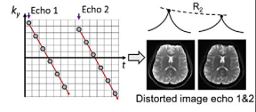
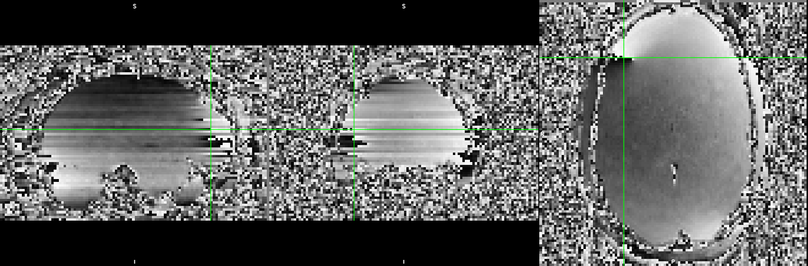
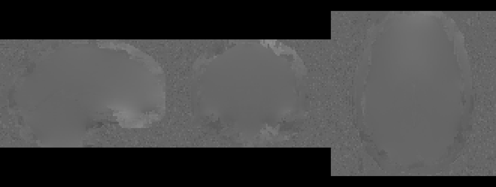
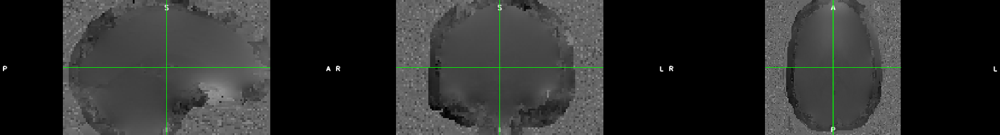

The inhomogeneity term is a spatially varying phase roll, which has
the following effect on the signal (assuming readout direction x and
phase-encoding direction y):
where $\tau_{dwell}$ is the time between k-space samples and
$\tau_{readout}$ is the time between the first and last echoes of the
readout train. Since $\tau_{dwell}$ is very small, distortion in readout
is negligible, but $\tau_{readout}$ is large enough to see significant
distortion in phase encoding direction.
An example
Simulation of distortion effects caused
by B0 inhomogeneities.
Correcting for distortion caused by B0 inhomogeneities
Correcting distortion requires measuring $\gamma \Delta B_0(x,y)$
(i.e. field map).
Two approaches:
Phase Difference
Reverse Phase Encoding

The Multi-Echo DIstortion Correction (MEDIC) algorithm uses the phase
difference approach.
MEDIC
What is MEDIC?
MEDIC is an algorithm that extracts field maps from the phase
information of multi-echo EPI data. This removes the need for a separate
field map acquisition:
Example of Reverse Phase Encode
Acquisition. Field mapping is done before/after a BOLD run.
In MEDIC, field maps are computed from
the phase information of ME-EPI, which allows for measurement of field
frame-to-frame.
Relationship between echo time, phase and the field map
The slope of the relationship between phase and echo time is the
field map:
$$\phi(x,y) = \gamma \Delta B_0(x,y) t_{echo}$$
For $n$ echoes, we want to find $\gamma \Delta B_0(x,y)$ that
satisfies the equation:
Raw phase measurements collected off the scanner are wrapped between
$-\pi$ and $\pi$:
Practical Issue 2: Phase offsets
The linear model assumes phase $\phi(x,y) = 0$ if $t = 0$. This is
not true in practice due to off-resonance effects in the receiver coils.
A more realistic model would be:
From the perspective of phase, there is no difference between a phase
value of $\phi$ and some $2\pi$ multiple offset of it (i.e. $\phi + 2\pi
N$). This means that there is no unique solution to the above
equation.
Assumptions
To solve these issues, we make the following assumptions:
The phase is spatially smooth.
Phase evolves linearly with time.
The global accumulation of phase at the 1st echo is low (more
specifically between $[-\pi, \pi]$).
Frames with similar head positions have similar unwrapped phase
values.
How does MEDIC work?
Step 1: Correcting phase offsets and unwrapping
Two algorithms:
Multi-Channel Phase Combination using measured 3D phase offsets,
Simplified (MCPC-3D-S): For phase offset correction
Rapid Opensource Minimum spanning treE algOrithm (ROMEO): For phase
unwrapping
Step 1a: Phase offset correction using MCPC-3D-S
MCPC-3D-S removes phase offsets through estimating an unwrapped phase
difference between echoes and predicting the phase offset (assuming
linear phase evolution).
Without phase offset correction, phase
unwrapping cannot find consistent solutions

Computed phase offset which are removed
from all echos
Phase Unwrapping after phase offset
correction
NOTE: After this step, the only operations
applied to the phase data is adding or subtracting multiples of
$2\pi$.
Step 1b: Phase unwrapping using ROMEO
ROMEO unwraps phase through a path based unwrapping algorithm. The
path is detemined through several quality metrics, all based around
varying smoothness criterion on the values/gradients of the
phase/magnitude images. ROMEO imposes a linear constraint on the
unwrapping solutions of phase across echoes.
Echo 1 Wrapped (14.2 ms)

Echo 1 Unwrapped (14.2 ms)
Echo 2 Wrapped (38.93 ms)
Echo 2 Unwrapped (38.93 ms)
Echo 3 Wrapped (63.66 ms)
Echo 3 Unwrapped (63.66 ms)
Echo 4 Wrapped (88.39 ms)
Echo 4 Unwrapped (88.39 ms)
Echo 5 Wrapped (113.12 ms)
Echo 5 Unwrapped (113.12 ms)
Phase unwrapping solutions for each echo.
Step 2: Global mode offset correction
As previously mentioned, unwrapping solutions are non-unique. We can
force uniqueness by assuming that the modal global accumulation of phase
at the first echo is within the range $-\pi$ and $\pi$, then imposing a
linear constraint for all subsequent echoes to find the unique
solution.
Example of unwrapping solutions settling
on $2\pi$ offset away from other solutions.

Bad solution in question.
After Global mode offset
correction.
Step 3: Temporal Correction
For each TR, compare the phase unwrapping solutions for TRs where the
head is positioned similarly. Then for each voxel, compute any $2\pi$
multiple offsets that would make the phase unwrapping solutions close to
the mean.
This seems to have the greatest effect for voxels where SNR is low,
and stabilizes the phase unwrapping solutions temporally.
NOTE: Might be revising this step to use
correlation as a similarity metric instead.
Step 4: Inverting the field map
Field maps computed on ME-EPI data are in the distorted space, so we
must invert the field map to get it into the undistorted space:
The field map is converted into a displacement field, then the ITK
libraryInvertDisplacementFieldImageFilter is used to invert
the field. The inverted displacement field is then converted back into a
field map.
Field map in distorted
space.
Field map in undistorted
space.
Results
Field Map Comparison
Comparison of Field Map from FLASH
(ROMEO), Bipolar EPI (TOPUP), and ME-EPI (MEDIC) data.
Correction Comparison
Distorted functional.
TOPUP corrected
MEDIC corrected
T2w Anatomical
tSNR Comparison
tSNR comparison between TOPUP and
MEDIC.
MEDIC can measure field changes over time due to head position.
-X Rotation
+X Rotation
-Y Rotation
+Y Rotation
-Z Rotation
+Z Rotation
-Z Translation
Slice Effects
High correlations between slices that are temporally close.
72 Slice Interleave and
Ascending
Effect attenuated when using 78 slices
instead of 72.
Is it respiration?
Compute linear model of motion and/or respiration parameters. Compute
$R^2$ of fits:
Motion and respiration.
Respiration only.
Motion only.
Is it respiration? (cont.)
After correcting with MEDIC, do a second pass of framewise alignment
on the data.
Motion Spectra before/after MEDIC
correction
Conclusions
MEDIC provides comparable quality distortion correction to TOPUP
Might suffer in areas of low SNR, in those cases TOPUP might be
better (e.g. vmPFC, OFC)
However, we add another dimension (time) we can correct over.
MEDIC probably corrects for respiration effects in the data.
Once pipeline integration is complete, will get a better idea of how
MEDIC performs in the context of a full pipeline.